OFFicial Consultancy
Committed to leveraging design and technology to empower displaced communities, shaping a world where everyone has the opportunity to thrive with dignity.
What People Say
"Welcome is more than just technology; it is a bridge of hope that transforms the unknown into something familiar and supportive." - Misha Al Numan (62), Chemical Engineer Refugee
Our Partners
Our Purpose
At OFFicial, we are a vital ally for people who are forced to leave behind their homes, lives, and everything they know and face precarious conditions upon arriving in a new country. In an interconnected and technologically advanced world, our mission is to support and empower these individuals who are constantly pursuing a dignified and secure life.
What do we do?
We use innovation and prospective design to create future-oriented artifacts that promote collective reflection and drive social change. We transform refugees' complex realities, projecting effective solutions for the near future. Our approach focuses on:
- Simplification: We significantly reduce the processing times for asylum applications through deeply empathetic and human interactions.
- Automation: We alleviate the administrative burden on institutions and streamline processes by integrating advanced intelligent technologies.
- Facilitating Integration: We build bridges of support that enable agile and meaningful integration into host communities, providing services that interpret and assist refugees at every step.
- Building Trust: In a constantly changing global environment, we offer clarity and eliminate uncertainty for refugees, ensuring a secure and understandable experience.
Design Principles
The design of WELCOME is not neutral. Our product is intentionally built around the values we represent as a company:
- 1. The future is about stories of change built in the present: we want to contribute to building a more sustainable, supportive, and equitable society.
- 2. We are optimistic, not utopian.
- 3. We design from real data and for everyone; we will not leave anyone behind.
- 4. Technology is a tool to solve problems, not a place to spend time. The right amount of tech is the minimum necessary to solve a problem.
- 5. Trust grows with transparency. We simplify processes to make them accessible.
- 6. We design for a before and after impact.
- 7. If we believe something is possible, we strive to change it and calmly accept what we cannot change.
- 8. What is important to our users is also important to our organization.
"Why do you always choose battles you cannot win? - Because they are the ones worth fighting for."
OFFicial's flagship product, designed to support refugees through every step of their journey in a new country. Powered by advanced Artificial Intelligence, Welcome simplifies, automates, and personalizes the asylum process and integration into the community.
Key Features
- AI-Driven Assistance: Provides real-time guidance and answers to asylum seekers, making the process less stressful and more accessible.
- Comprehensive Data Management: Collects, organizes, and updates essential documents and information every 24 to 48 hours to ensure applications are processed swiftly and accurately.
- Community and Resource Integration: Connects refugees with local resources, support networks, and essential services, easing their transition and promoting a sense of belonging.
- Trusted Information Access: Taps into a robust database covering news, social conditions, healthcare, employment, and bureaucratic systems of the host country, distinguishing between verified and unverified data for reliable updates.
- Proactive, Personalized Support: Autonomously suggests actions to improve the quality of life for refugees, tailoring communication styles to match individual needs and language proficiencies.
- Anonymous Data Sharing: Generates anonymized statistics for sharing with governments and NGOs, contributing to improved policies and support systems.
Technical Viability
At OFFicial, we follow the path of Responsible Design because:
- It is seen as a means for sustainability.
- It minimizes the risk of products becoming obsolete.
- Using carefully selected materials reduces environmental impact.
- It is designed for longer durability.
- It is an innovation based on recycled and higher-quality materials, contributing to both carbon and waste footprint reduction for the planet.
OFFicial considers applying Modular Design to its products important because:
- Conventional design is still too complex and unsuitable for creating a portfolio of different product versions.
- With modular design, any current market product can be adapted without restarting the manufacturing process.
- Modularity provides agility, helping to avoid large amounts of obsolete inventory whenever the market changes.
- It is more consumer/user-friendly as they do not face total replacement; they can easily replace the broken module.
- It fosters a broader customer/user base.
- Aesthetic customization (as long as they like the overall design language, it can be easily modified to fit anyone's personal style).
- Product confidence. They do not waste the money invested in it.
Not every hardware product suits this approach (e.g., thin and lightweight designs like smartphones), but complexity can be managed. With the design features of OFFicial's wearable, modularity works because it is still relatively simple and manageable.
We are not looking for the impossible but to do things well, one at a time.
A design based on both longevity (responsibility) and modularity can extend the functional lifespan of the wearable.
Economic Viability
Another validation point is economic, and at OFFicial, we believe Welcome's stakeholders and partners are excellent business options:
- Google with its "Impact Challenge," providing support to non-profit organizations and community social initiatives to make society a better place together; referencing the 2018 Google AI Impact Challenge.
- SkillLab BV (Netherlands), discovered based on the previous partner. They help municipal employment services integrate refugees into local jobs. Using an AI-powered app, refugees can quickly document their skills in their native languages and receive relevant career path recommendations to explore.
- Solferino Academy. It aims to challenge and inspire how people work, think, act, and connect. It supports the International Federation of Red Cross (IFRC) network in transforming for the future, thriving through complex and dynamic changes. The IFRC can better address upcoming humanitarian and development challenges by doing so. The Academy partners with the private sector, academic institutions, entrepreneurs, startups, and others with similar values.
Legal Viability
In terms of legal viability, since Welcome's set of information and data is considered confidential or in high-risk environments, its security and protection are of utmost importance for both OFFicial and all involved actors, relying on the primary attribute of digital identification systems:
- Flexibility and durability in operation (e.g., in a natural disaster and/or migration).
- Using Biometrics, one of the principles sought by the design team was for the wearable to comply with the principle of being counterfeit-resistant. This means ensuring that it is difficult to fake, providing security to the user.
The type of identification included in our device is based on a security methodology, allowing the recognition of our users' non-transferable physical characteristics for identification. This increases the security of the second system, ensuring no vulnerabilities in the security.
These applications aim for more convenient systems (easier presentation of identification and documentation), more secure (only authorized individuals have access), and faster (reduced maintenance of codes).
OFFicial's biometric system is overseen by a public official and NGO workers during the registration (NGO) and verification (State) of asylum seekers' identities in the database. Civil identification aims to prevent multiple registrations and duplicates, following the International Committee of the Red Cross (ICRC) conditions for biometric data transfer to the State.
Therefore, Welcome will guarantee data protection, collecting only what is necessary and deleting it once the asylum process and evaluation are complete. This ensures that migrants and refugees can live without fear, connecting with the host community and inviting them to participate.
 


Our Team
Jorge Gil
Lead UI Designer / Interaction Designer Jr.
Graduated in Audiovisual Communication. He has developed his career in diverse fields, such as audiovisual production, graphic design, and DIY event curation and management, with social innovation as a common thread.
"Deeply convinced that design and technology should serve communication between people, and not the other way around, and with a life trajectory in community organizations, we create Welcome to impact, facilitate, and streamline the management of situations of vulnerability, particularly in the asylum application process for refugees by the principles of the Geneva Convention."
Eider Fernández Árcos
Lead Product Designer / Researcher Jr.
Graduated in Product Design from UDIT, she complements her education with a Master’s in User Experience Design for Products and Services from the same institution. Currently, she focuses on creating and managing communities, organizing events and meetups to attract opportunities, and establishing relationships with key players in the design sector.
"I believe in design as a tool to move forward, and through my work, I feel obligated to respond to any stimulus that arises from observing situations or needs, using the natural user experience-based design process. I believe designers have that superpower and that creativity and empathy are our greatest allies in addressing it."
Nicolás Bronzina
Lead Researcher / UI Designer Jr.
As a Design Researcher, he focuses on enriching and advancing the speculative aspects of design through extensive research, diegetic prototyping, and translating conceptual frameworks into tangible ideas.
"Due to my personal interest in social issues, particularly those affecting vulnerable populations, and my academic background as a Sociologist, the personal purpose of this project is to understand, from my perspective as a foreigner in Spain, the life stories, needs, and challenges of refugees in Spain. I seek to empathize with them and find possible solutions from my place in society and as part of the OFFicial team."
Contact Us
Interested in collaborating or learning more? Reach out, and let's make a difference together.
This website and its artifact tell a story about a future we might all experience soon, regardless of whether you live in Spain. It is part of the Final Master’s Thesis based on Futures Design and Strategic Foresight between Nicolás Bronzina, Eider Fernández Árcos, and Jorge Gil called "User Experience Design as a Tool for Social Intervention in the Refugee Crisis.”
We used an approach called Design Fiction to envision, design, and move toward desirable futures rather than passively accepting what is and 'will be' the so-called refugee crisis.
Please contact Nicolás Bronzina for further information about this project.